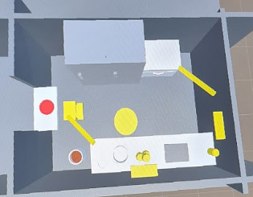
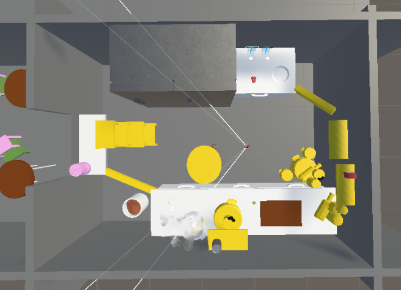
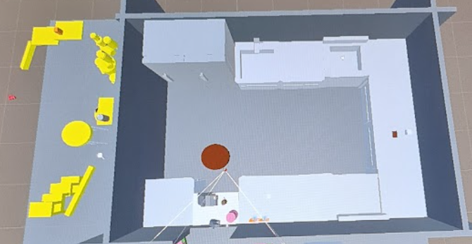
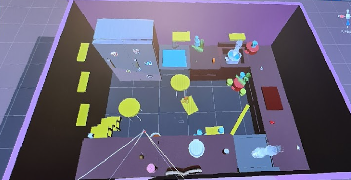
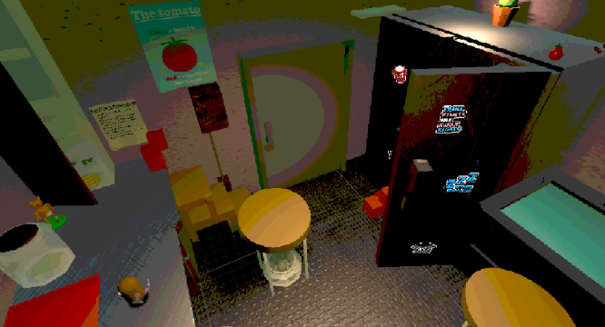
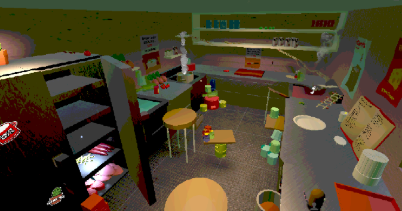

Project Overview
Squeak n Serve was a project made in 3 months where I took the role as the Level Designer and 2D artist. It was a cooking simulator and platformer hybrid where the player played as a small rat in a big kitchen. A big part of the game was the navigation inside the foodtruck.
Level Design
Platforming and scale was the priority.
The Goals
- Encourage exploration & movement.
- Horizontal & vertical movement.
- Scale would have a big presence.
Verticality
- Small player -> big world -> platforming -> invoke a feeling of scale.
- Different cooking stations -> different places -> weight on movement.

- The first whitebox of the final level was simple.
- It mimicked the layout of a foodtruck -> small and compact -> less horizontal space -> more vertical.

- Second iteration added more attempts at verticality.- To add more potential paths for the player.
- It still lacked verticality.

- The third iteration had a more concrete base with more defined stations.- A U-shape where paths could be crossed.

- More paths were added, both vertical and horizontal.- More freedom for player movement.
- Easy paths between the stations -> not the only path.
Final Product
The final level added more verticality as well as merging structures with player paths. This can
be seen with how the top of the door can be walked on to get to the top of the fridge.

- Colour was also added to the level to stand out against the background and show places the player could use for platforming.
- Bright colours were added to places that the player could reach and get another view of the world.- Beside from the fridge, a shelf was added for the player to stand on and get a better view of the gameworld from above as well.
- Posters were also added to indirectly give players information about the game, one example is a poster above the stove showing how it's hot.
Playtests
A lot of good feedback about the level design came from the playtests.
Feedback
- The players liked the platforming as well as the verticality.
- The clutter and closeness of the level felt nice and connected to the game story.
- Liked the scale and the freedom of movement.
The players were also observed to enjoy simply playing in the gameworld as they ran and jumped around
and threw around objects to see what happened.
Changes
- More verticality was added both up and down for more movement.
- Clutter was prioritized when creating platforming so that the platforming elements felt natural
to the world.
Lessons learned
As this was one of the first hybrid platforming games I did level design for I learned a lot.
- The importance of guiding utilizing colours, shapes and perspectives.
- Creating with scale and how to make it feel good.
- Make sure that the platforming is both practical but also fun and evokes a curiosity in
the player.
- How to convey a story and feeling through objects and textures.
In depth thoughts
Here is a video in Swedish that further explains the level design as well as my thoughts about it.